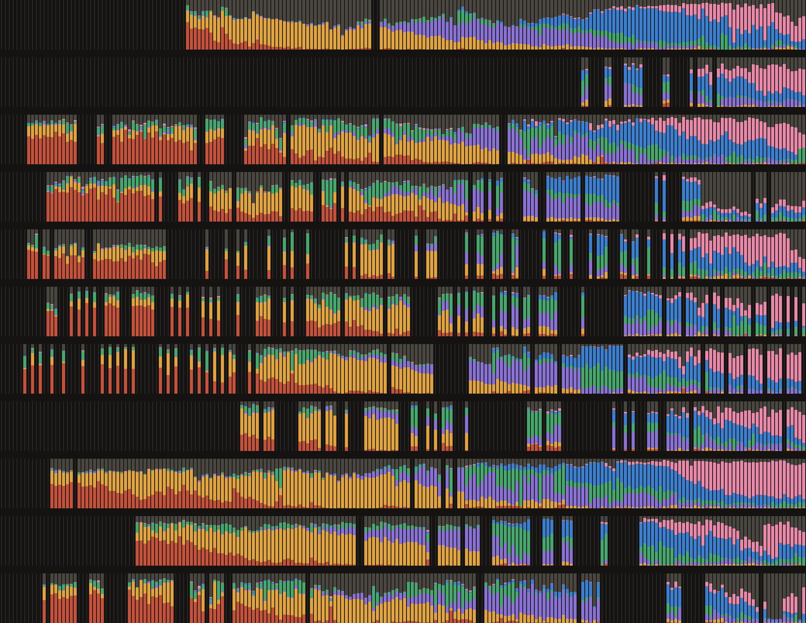

1,474 speeches in Spanish from 11 countries · 1819–2026
Every annual speech since 1819, colored by its topics
Each vertical line is one speech, colored by the share of the speech devoted to each topic. Read across a row to follow one country, or down a column to compare countries in the same year.
War and Peace
Public Administration
Infrastructure
National Identity
Economic Development
Social Welfare
Other topics
Mexico
Dominican Rep.
Costa Rica
Venezuela
Colombia
Ecuador
Peru
Paraguay
Chile
Argentina
Uruguay

1
2
1819
1850
1900
1950
2000
2026
1Peru, 1968–1969. In Fernando Belaúnde's last speech, 41 percent is about Infrastructure. In Juan Velasco Alvarado's first speech, after the 1968 coup, 44 percent is about National Identity and 41 percent about Economic Development.
2Chile, 1964–1965. In Jorge Alessandri's last speech, 61 percent is about National Identity. In Eduardo Frei Montalva's first speech, after the 1964 election, 42 percent is about Infrastructure and 33 percent about Economic Development.
Topic shares come from the paper's topic model, which covers the speeches in Spanish, so Brazil is not shown. Thin dark lines mark years without a speech in the model.